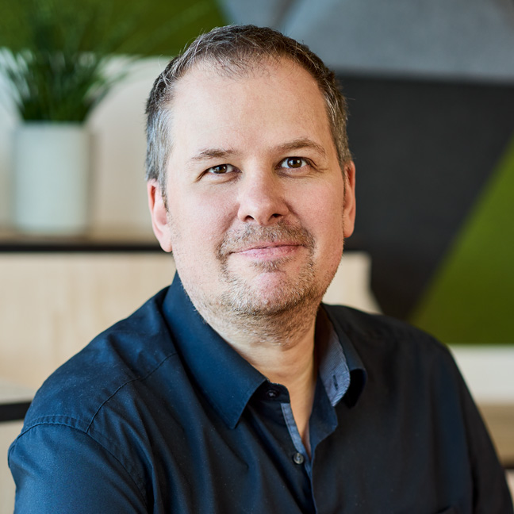
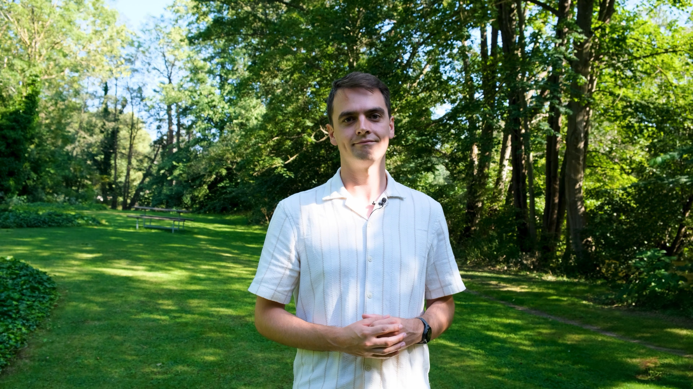

People
Meet the team
A diverse group of researchers, engineers, and educators pushing the boundaries of distributed computing.
MK

Jakob Hviid
Assistant ProfessorResearch is positioned at the intersection of software architecture and AI, with a unifying focus on how structured ontologies and knowledge graphs can serve as semantic foundations for intelligent, context-aware systems. Three directions extend this principle: knowledge-driven architectures for self-managing AI systems, ontology-grounded contextualization for AI in critical infrastructure (energy sector as primary application domain), and transferable reasoning frameworks for stateless AI systems.
jah@mmmi.sdu.dk
Francesco Daghero
Postdoctoral ResearcherFrancesco Daghero’s research interests include machine learning and deep learning, with a primary focus on efficiency across both resource-constrained systems, such as TinyML, and high-performance computing platforms. His work emphasizes energy and memory efficiency, spanning optimizations from algorithm design to compiler and system-level techniques.
fdag@mmmi.sdu.dkTiziano Santilli
Postdoctoral ResearcherTiziano Santilli investigates the intersection of software architecture and generative AI, focusing on the strategic integration of Large and Small Language Models (LLMs and SLMs) to automate architectural recovery and system documentation. His work emphasizes continuous compliance in highly regulated sectors, designing frameworks that treat ethical and safety constraints as fundamental architectural guardrails. By optimizing the trade-offs between model scale and system efficiency, he develops "compliance-aware" architectures that balance cutting-edge AI performance with rigorous engineering standards.
tisa@mmmi.sdu.dkMichel Albonico
Associate ProfessorMy research focuses on sustainable software engineering for cyber-physical systems, particularly robotics, in the age of AI. In robotics, I am especially interested in projects based on the Robot Operating System (ROS), with a particular focus on improving the software development pipeline and enhancing the quality of robotic software products.
mical@mmmi.sdu.dk
Emil Jørgensen Njor
Assistant ProfessorResearching AI on extremely resource-constrained devices, with a focus on scaling adoption and addressing the nuanced challenges and benefits of the technology.
njor@mmmi.sdu.dk
Anders L. B. Petersen
PhD StudentAnders' focus lies at the intersection of machine learning, software architecture, and the development of reliable AI systems. With a background in mathematical modeling and computation from the Technical University of Denmark and over 4 years of industry experience, Anders offers a strong analytical foundation and practical experience in designing intelligent AI systems.
anbae@mmmi.sdu.dkLeo Wilhelm Lierse
PhD StudentSustainable Computing & Distributed Systems
leoli@mmmi.sdu.dk